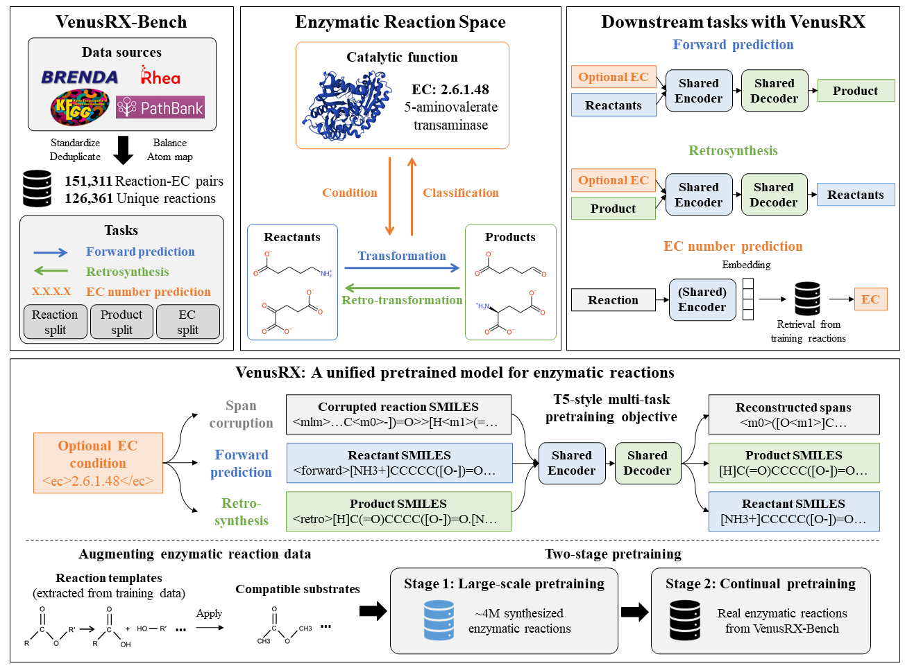

VenusRX：联合学习分子变换与催化功能，建立统一的酶反应空间
论文原文 ↗论文：Elucidating the Space of Enzymatic Reaction: A Unified Benchmark and Pretrained Model，Yutong Hu、Tianming Huang 等，2026。arXiv｜
酶反应需要同时知道“分子怎样变”和“什么催化功能促成变化”
给定一个底物，酶催化会得到什么产物？反过来，想用酶合成一个目标分子，需要哪些反应物和催化活动？一般有机反应模型主要从分子变化中学习，但酶反应还强烈依赖催化背景。相关记录分散、数量较少，生物分子往往又大又复杂，使专利反应中学到的经验难以直接迁移。
VenusRX 将反应物、产物与酶学委员会 EC 注释连接成一个酶反应空间。作者先建立统一基准 VenusRX-Bench，让正向反应、单步逆合成和 EC 预测使用共同整理的数据与评估；再训练 VenusRX，以百万级酶反应模板扩展数据预训练、真实生化反应适配，并把 EC 作为可选条件。方法的主线是利用反应结构与催化功能的双向联系，缩小一般化学模型与酶反应之间的领域差距。
先把分散记录整理成同一个问题
EC 编号通常有四级数字，逐层细化酶催化活动。例如图 1 的 EC 2.6.1.48 表示 5-氨基戊酸转氨酶活动：5-氨基戊酸将氨基转给 2-氧代戊二酸，形成 5-氧代戊酸和谷氨酸。这条反应同时给出分子变化和催化类别，是连接三类信息的真实例子。
作者从 BRENDA、PathBank、Rhea 和 KEGG 汇集记录，统一分子表示与反应方向，尽可能配平反应，再建立原子映射，标出反应前后原子的对应关系。原子映射用于确定反应中心和抽取模板，语言模型输入采用移除映射编号后的 SMILES。SMILES 用原子、键、分支与环编号将分子图写成字符串。
规范化分子并排序组分，可以合并只因写法和排列不同造成的重复。进一步整理出唯一主产物，形成 83,439 个用于基准的反应样本。作者按反应物、主产物和完整四级 EC 分别设计留出划分，并按相应规则清理预训练语料，使不同泛化问题有一致的比较口径。

原图 Fig.1。上方连接多源数据库、反应物—产物—催化功能及三类评估任务；下方展示共享编码器与解码器、反应片段重建和两阶段训练。
同一套模型怎样学习多个方向
VenusRX 是 25.1M 参数的 T5 风格序列到序列模型。编码器把输入字符串转换为上下文表示，解码器依据这些表示生成输出；任务标记告诉共享参数当前应做什么。
正向任务从反应物 SMILES 生成主产物，逆合成从主产物生成反应物组合，反应重建则遮住完整反应的一部分字符串，再恢复缺失片段。重建任务让模型同时利用反应物和产物上下文，学习两侧结构的联系。回到转氨例，正向任务将底物与共底物送入模型预测主产物，逆向任务则从目标产物寻找对应的含氨基底物及氨基受体。
对带 EC 的记录，训练时以一半概率附加催化活动标签，因此模型同时学习有条件和无条件两种输入。使用时，已知催化功能便提供 EC，模型可以据此缩小可考虑的变换范围。作者还用根对齐 R-SMILES 为同一反应产生多种写法：借助原子对应调整输入输出起点，减轻字符串翻译难度。训练随机抽取视图；预测时规范化、去重并融合多个视图的候选排名。
第一阶段的数据由酶反应模板扩展而来。模板保留反应中心附近的结构要求及键变化，将满足要求的分子片段组合代入，生成新的反应物—产物候选，再经过结构与反应一致性等过滤。约 400 万条扩展记录让模型接触更丰富的底物与酶变换组合。第二阶段再用基准训练集中的真实生化反应继续训练，使模型适应真实数据分布。
另一个关键组件是分子库约束解码 MLCD。它将预先给定的基准分子库写法组织成前缀树，生成到某个前缀时，只允许选择仍可通向库中完整分子的字符；多分子输出遇到分隔符后从树根重新开始。模型根据任务决定候选，树结构帮助复杂生物分子保持有效写法。
领域预训练与真实数据适配共同提高预测
基准先展示一般化学模型迁移到酶反应的明显落差，再在相同训练划分上适配各方法。对未见主产物划分，在无 EC、无分子库约束的正向任务中，VenusRX 的 Top-1 为 50.959%，Graph2SMILES 为 34.408%；完整 EC 留出划分相应为 31.100% 与 19.823%。Top-1 表示首个候选是否匹配记录的参考答案；Top-k 则看前 k 个中是否命中。
两阶段消融解释了数据流程的作用。在 Reactant Split、有 EC、无库约束的相同生成设置中，完整两阶段模型正向 Top-1 为 75.221%；只用真实反应训练为 47.192%，只做第一阶段为 35.450%。模板扩展提供反应模式和底物覆盖，真实反应训练进一步把这些知识对准目标分布，二者共同形成主要收益。
催化信息帮助反应预测，反应表示也能预测催化功能
同一个分子在不同催化背景下可能发生不同变化，因此 EC 尤其能帮助逆向推断。在完整 EC 留出划分中，同一个无库约束模型的逆合成 Top-1，从不提供 EC 时的 4.878%，提高到提供 EC 时的 18.360%。催化类别为从产物选择反应物提供了方向。
反过来，模型可以把完整反应编码成向量，用于 EC 预测。作者冻结编码器，对同一反应的多种写法取平均表示，再在带标签训练反应中找近邻；也可进一步训练下游投影，使相近催化活动的表示更接近。这样，反应结构知识进入了催化功能注释。
在 Reactant Split，冻结表示检索的完整四级 EC 加权 F1 为 51.17%，DRFP 为 49.40%；接入下游训练后，三级 EC 加权 F1 为 86.03%，CLAIRE 为 84.14%。F1 同时考虑预测的准确性与找回参考类别的完整程度，加权平均按类别样本数统计。这些结果与 EC 条件下的反应预测相互呼应，展示了两种信息的双向联系。
约束解码改善复杂分子的生成
在给定分子库的完整 EC 留出逆合成任务中，MLCD 将无效 SMILES 比例从 3.086% 降到 0，Top-1 从 18.360% 提高到 20.374%，Top-10 从 30.872% 提高到 34.552%。前缀树在每一步保留合法延续，减少长分子字符串的结构性错误；模型则继续学习如何依据反应和催化条件选择这些分子。
VenusRX 的贡献在于把数据、反应方向和催化功能放到共同框架中：统一基准刻画领域差距，酶模板预训练扩大学习空间，真实反应适配对准目标分布，EC 条件与反应表示在两个方向互相补充。由此，酶反应建模从孤立的分子翻译任务，走向反应物、产物和催化活动的联合学习。
原始摘要完整中文翻译
现有反应模型主要学习分子转化，而酶催化反应共同依赖分子结构与催化功能。我们将这一问题表述为学习一个连接反应物、产物与酶学委员会（EC）注释的酶反应空间。为了刻画这一空间，我们提出 VenusRX-Bench，这是一个统一的正向反应预测、单步逆合成和 EC 编号预测基准。VenusRX-Bench 整合了多个生化数据库的反应，采用标准化整理、控制数据泄漏的划分和一致的评估。对代表性化学反应模型与酶反应模型的基准测试揭示了明显的化学反应到酶反应的领域差距，其原因包括领域数据有限、对催化上下文的依赖以及大型生物分子结构难以建模。
为弥合这一差距，我们开发了 VenusRX，一种面向酶反应的统一 T5 风格序列到序列模型。VenusRX 联合学习正向预测、逆合成和反应重建，先在数百万条模板扩展反应上训练，再在真实生化反应上训练，形成两阶段流程。此外，可选的 EC 条件纳入催化上下文，而分子库约束解码改善复杂生物分子的生成。在基准任务和具有挑战性的泛化划分中，相较代表性的化学与酶反应基线，VenusRX 在大多数被评估设置下取得最佳或具有竞争力的表现。此外，EC 信息持续改善反应预测，而学习到的反应表示支持准确的 EC 预测，揭示了反应结构与催化功能之间的双向关系。VenusRX-Bench 与 VenusRX 共同提供了一个统一框架，用于阐明并建模酶反应空间。